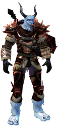
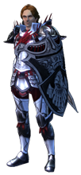
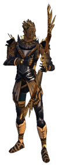
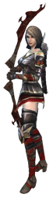
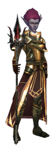
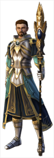

| Krieger |
| Krieger haben einen besonderen Bezug zu Nahkampfwaffen. Sie werden ausgebildet, um zu hervorragenden Kämpfern für ihr jeweiliges Reich zu werden. Den Makel, dass ihnen die Magie nicht zugänglich ist, machen sie durch kämpferisches Geschick, verheerende Angriffe und gepanzerte Rüstungen wieder wett. Der Krieger kann sich entscheiden, ob er riesige Zweihand- oder lieber zwei Einhandwaffen führen und seine Angriffstechniken weiter ausbauen möchte, indem er zu einem Barbaren wird oder aber sich auf seine taktischen Fähigkeiten konzentrieren und mit Schild und Waffe gewappnet zu Felde ziehen möchte - in diesem Fall ist der Ritter für ihn die richtige Wahl. |
|  |
 |
Beschreibung Barbar
|
Beschreibung Ritter
|
| Bogenschütze |
| Bogenschützen sind Fernkämpfer und zeichnen sich durch das Führen von Lang- oder Kurzbögen sowie ihre geschickten Ausweichmanöver aus. Auch hier finden sich zwei Unterklassen, nämlich Jäger und Schütze. Der Schütze profitiert von der enormen Reichweite seiner Angriffe sowie seiner widerstandsfähigen Rüstung, wohingegen der Jäger ein Meister des Spurenlesens ist und die Gabe besitzt, wilde Monster zu zähmen und diese als seine Haustiere in die Schlacht zu führen, wo sie an seiner Seite kämpfen. Weiterhin ist er in der Lage, sich selbst oder sogar eine ganze Gruppe von Verbündeten für eine kurze Zeit lang zu tarnen, aus dem Hinterhalt anzugreifen und somit Schlachten zu seinem Vorteil zu entscheiden. Allerdings fliegen seine Pfeile weniger weit als die des Schützen, und sie besitzen auch weniger Durchschlagskraft. |
|  |
 |
Beschreibung Schütze
|
Beschreibung Jüger
|
| Magier |
| Magier sind, wie ihr Name schon sagt, auf Zauberei angewiesen, um sich in der Welt von Regnum behaupten zu können. Die Fähigkeit, sich der okkulten Mächte zu bedienen, macht sie zu ernst zu nehmenden Gegnern oder aber zu unentbehrlichen Verbündeten. Die beiden Unterklassen des Magiers könnten unterschiedlicher nicht sein; so kann er als Beschwörer untote Wesen beschwören und für sich kämpfen lassen, Verbündete gegen Angriffe abschirmen, heilen oder sogar aus dem Reich der Toten zurückholen, während er sich als Hexenmeister ganz den dunkleren Pfaden der Zauberei verschreibt, indem er sich die zerstörerische Kraft der Elemente zunutze macht, um seine Gegner zu vernichten. Weiterhin ist er imstande, seinen Gegnern Lebenskraft zu entziehen und feindlichen Beschwörungen seinen Willen aufzuwingen. Ganz gleich, ob sich der Magier für die Pfade des Lichts oder aber der Dunkelheit entscheidet - auf dem Schlachtfeld kann er immer bestehen. |
|  |
 |
Beschreibung Hexenmeister
|
Beschreibung Beschwörer
|